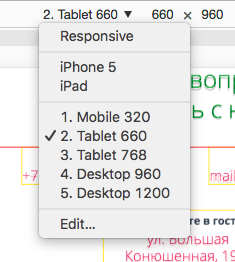
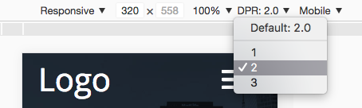
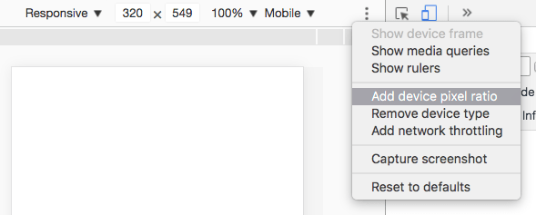
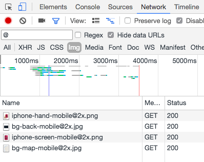

Проверить HTML
Используйте валидатор разметки.
Он проверит ваш HTML на соответствие спецификациям, а так же поможет найти простые ошибки, вроде незакрытых тегов.
Подсказка: если валидатор говорит, что в section и article обязательно должны быть заголовки, добавьте их в разметку. Если в макете нет текста, подходящего по смыслу, можно сделать скрытые заголовки используя способ с классом .visuallyhidden, это поможет выстроить чёткую структуру документа.
Проверить БЭМ-разметку
Используйте Html tree.
Инструмент построит структуру страницы, проверит БЭМ-разметку на самые простые ошибки и покажет иерархию заголовков.
Проверить CSS
Валидация
Используйте CSS syntax validator.
Форматирование
Используйте The stylelint CLI.
Установка:
{% highlight js %} npm install -g stylelint {% endhighlight %}Также нужен файл с правилами проверки стилей. Можно взять мой набор правил, сохраните его в корне проекта в файл с названием .stylelintrc (расширение не нужно).
Файл с правилами можно редактировать под ваши нужды, узнать больше о правилах можно здесь.
Использование:
SASS: {% highlight js %} stylelint "sass/**/*.scss" {% endhighlight %} LESS: {% highlight js %} stylelint "less/**/*.less" {% endhighlight %}Команда запускается в папке проекта.
Проверить страницу на разных размерах экрана
Используйте эмулятор мобильных устройств, который есть в Хроме. Кнопка включения находится в панели разработчиков, вторая иконка в верхнем ряду:

В эмуляторе в выпадающем меню можно просто выбрать устройство с подходящими размерами, а можно кликнуть «Edit» и добавить свои:

Справа на скриншоте есть выпадушка с выбором типа устройства (на скриншоте Mobile), эта опция влияет на наличие прокрутки на странице. Чтобы прокрутка не отъедала ширину страницы, между Mobile и Desktop всегда выбирайте Mobile.
Там же можно скрыть устройства, которые вам не нужны.
Мой список устройств выглядит так:
Такой поход избавляет от необходимости подбирать размер окна руками, а так же позволяет быстро переключаться между вьюпортам, причём именно теми, которые нужны вам.
Проверить страницу на соответствие макету
Используйте Pixel Glass.
Проверить шрифты
Панель разработчика → Network → Fonts.
Подсказка: проверьте, что в браузерах с поддержкой woff2 загрузится именно этот формат. Если грузится woff, проверьте порядок перечисления шрифтов. Браузер выбирает первый подходящий, а не оптимальный из перечисленных.
Проверить изображения
Панель разработчика → Network → Img.
Плотность пикселей устройства можно выбрать в меню эмулятора:
Если там нет такой опции, нажмите на три точки в правой части панели устройств и включите её в выпадающем меню:
Если все адаптивные изображения содержат в своём адресе @, этот спецсимвол можно использовать для фильтрации, чтобы в панели показывались только те картинки, которые нужно проверить:
В панели устройств меняйте размеры экрана и плотность пикселей и смотрите какие изображения загрузились.